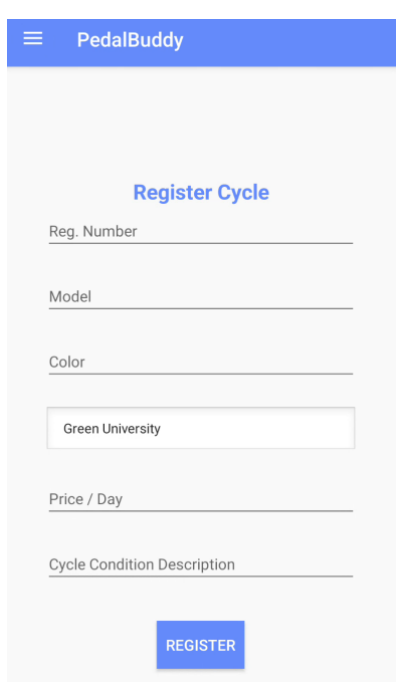
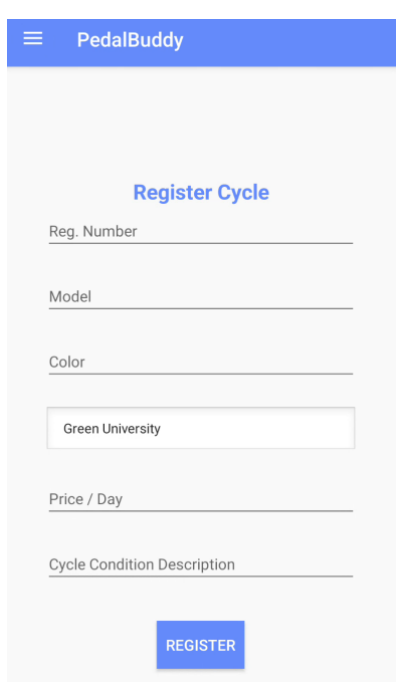

Project Details
Overview: The PedalBuddy-Bicycle Rental App is a mobile application designed to provide a streamlined and user-friendly bicycle rental experience. It allows users to register bicycles, manage rentals, track transactions, and access administrative tools for better inventory and user management.
Goals: To offer a modern, eco-friendly transportation platform that simplifies bicycle rentals while promoting sustainable and healthy lifestyles.
Functional Features: User authentication, cycle registration, rental management, transaction handling, and admin functionality.
Non-Functional Features: Scalability, responsive design, and robust data handling using SQLite.
Tools & Technologies:
- Frontend: XML (Android layouts)
- Backend: Java
- Database: SQLite
- Key Features: User authentication, cycle management, transaction history, admin dashboard.
Project Screenshots
 

Summary
The PedalBuddy-Bicycle Rental App provides an efficient solution to the challenges of managing bicycle rentals. Its modular architecture ensures a seamless user experience, while SQLite integration guarantees secure and reliable data management. Future enhancements include the addition of a digital payment system and migration to cloud-based databases for better scalability.